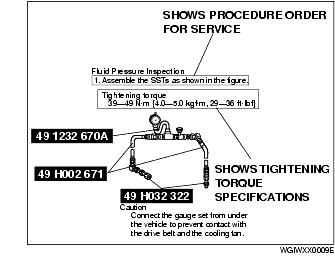
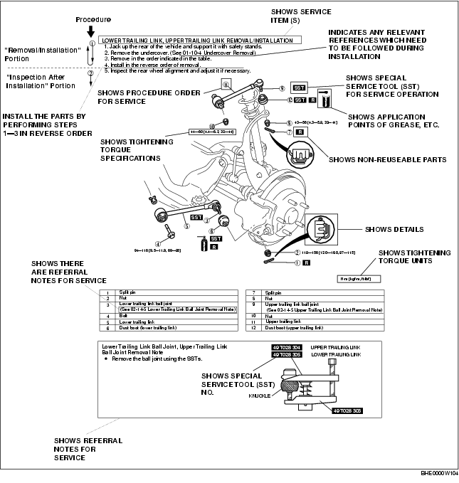

P66M-D [MT WM] ➭ GENERAL INFORMATION ➭ GENERAL INFORMATION ➭ HOW TO USE THIS MANUAL
HOW TO USE THIS MANUAL
D5E000000000M01
{: #wp1058560}
Range of Topics
• This manual contains procedures for performing all required service operations. The procedures are divided into the following five basic operations:
- Removal/Installation {: #wp1058584}- Disassembly/Assembly {: #wp1058600}- Replacement {: #wp1058612}- Inspection {: #wp1058622}- Adjustment
• Simple operations which can be performed easily just by looking at the vehicle (i.e., removal/installation of parts, jacking, vehicle lifting, cleaning of parts, and visual inspection) have been omitted.
Service Procedure
Inspection, adjustment
• Inspection and adjustment procedures are divided into steps. Important points regarding the location and contents of the procedures are explained in detail and shown in the illustrations.

Repair procedure
-
Most repair operations begin with an overview illustration. It identifies the components, shows how the parts fit together, and describes visual part inspection. However, only removal/installation procedures that need to be performed methodically have written instructions.
-
Expendable parts, tightening torques, and symbols for oil, grease, and sealant are shown in the overview illustration. In addition, symbols indicating parts requiring the use of special service tools or equivalent are also shown.
-
Procedure steps are numbered and the part that is the main point of that procedure is shown in the illustration with the corresponding number. Occasionally, there are important points or additional information concerning a procedure. Refer to this information when servicing the related part.{: #wp1058737}

Symbols
• There are eight symbols indicating oil, grease, fluids, sealant, and the use of SST or equivalent. These symbols show application points or use of these materials during service.
|
Meaning {: #wp1058884} |
Kind {: #wp1058886} |
|
|---|---|---|
|
{: #wp1058800} |
Apply oil {: #wp1058802} |
New appropriate engine oil or gear oil {: #wp1058858} |
|
{: #wp1058905} |
Apply brake fluid {: #wp1058908} |
New appropriate brake fluid {: #wp1058911} |
|
{: #wp1058915} |
Apply automatic transaxle/ {: #wp1058918} transmission fluid {: #wp1059038} |
New appropriate automatic {: #wp1058921} transaxle/ {: #wp1059049} transmission fluid {: #wp1059056} |
|
{: #wp1058925} |
Apply grease {: #wp1058928} |
Appropriate grease {: #wp1058931} |
|
{: #wp1059082} |
Apply sealant {: #wp1059085} |
Appropriate {: #wp1059088} sealant {: #wp1059116} |
|
{: #wp1059120} |
Apply petroleum jelly {: #wp1059123} |
Appropriate {: #wp1059126} petroleum jelly {: #wp1059154} |
|
{: #wp1059158} |
Replace part {: #wp1059161} |
O-ring, gasket, etc. {: #wp1059164} |
|
{: #wp1059192} |
Use SST or {: #wp1059195} equivalent {: #wp1059221} |
Appropriate tools {: #wp1059198} |
Advisory Messages
• You will find several Warnings, Cautions, Notes, Specifications and Upper and Lower Limits in this manual.
Warning
• A Warning indicates a situation in which serious injury or death could result if the warning is ignored.
Caution
• A Caution indicates a situation in which damage to the vehicle or parts could result if the caution is ignored.
Note
• A Note provides added information that will help you to complete a particular procedure.
Specification
• The values indicate the allowable range when performing inspections or adjustments.
Upper and lower limits
• The values indicate the upper and lower limits that must not be exceeded when performing inspections or adjustments.